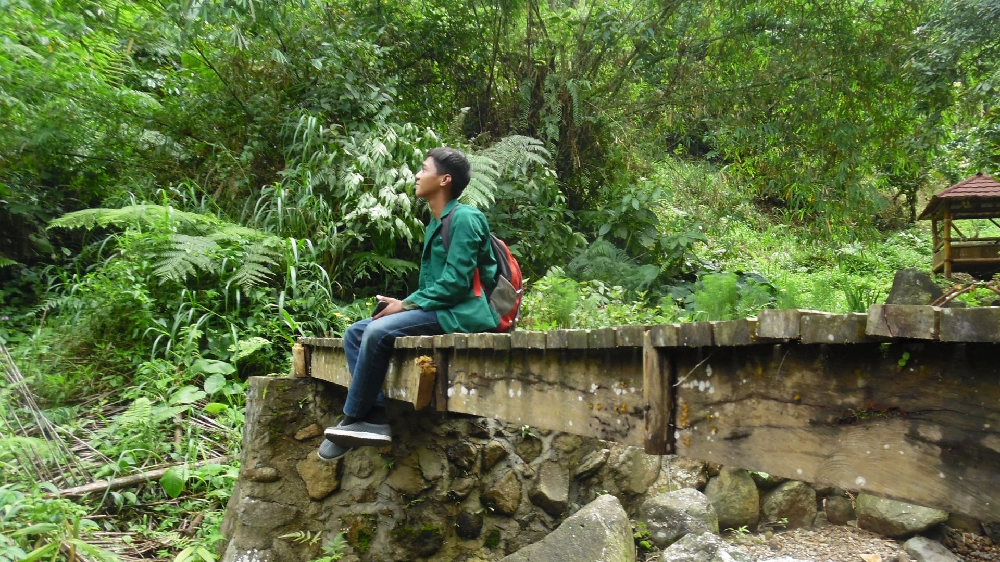

Latar Depan
Dari latar depannya saja sudah indah.

Pintu Masuk
Halo! Selamat datang di Curug Bendo.

Jembatan Renungan
Di jembatan ini, kalian bisa merenungi kehidupan.

Kebersamaan
Tentunya tempat menarik cocok untuk menemani kebersamaan.